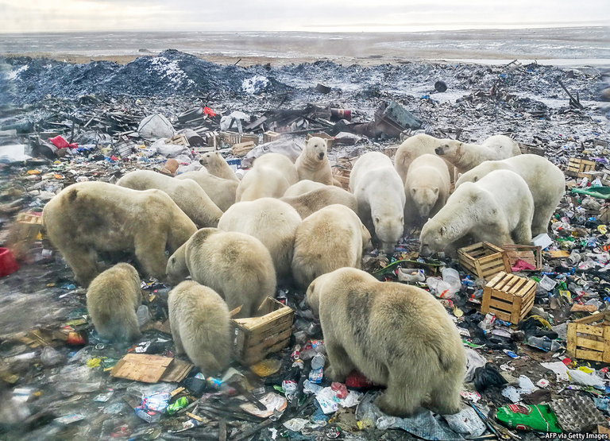

2021-03-05T12:20:15+00:00
应对气候变化
零排放竞赛
盖茨说，政府和企业必须携手拯救世界【《如何避免气候灾难》书评】
“需要多少个地球？”圣雄甘地提出这个问题时，他在思考如果印度效仿英国开创的资源密集型发展道路，将给环境带来什么影响。这一发问在今天依然引发共鸣。正如智库世界经济论坛所称，全球的“食物-能源-水的联结”陷入了困境。全球变暖是最令人担忧的危机。如果每个中国人都像许多美国人那样住巨无霸式豪宅、开高油耗大车，需要多少个地球才够呢？
在一些大亨看来，解决办法是找到更多星球。15年前，马斯克非常忧心气候变化会让地球变得不宜居，他恳切地告诉笔者自己打算把人类变成跨行星物种。此后，他不断将自己在电动汽车公司特斯拉上赚到的钱投入到SpaceX，打造越来越好的火箭。上月，电子商务巨头亚马逊的贝索斯退出了公司的日常管理，好将更多时间花在他的火箭企业蓝色起源（Blue Origin）上——他称之为自己最重要的工作。他宣称，即将到来的能源危机意味着“我们必须走向太空来拯救地球”。
相比之下，微软的联合创始人比尔·盖茨更脚踏实地。他和这些亿万富翁一样关注全球变暖，但在他看来，重要的星球只有一颗。他的新书《如何避免气候灾难》（How to Avoid a Climate Disaster）专门论述了如何调和几十亿人追求经济发展的合理愿望和由此造成的环境破坏。他写道，如果人类要在经济发展与环境退化之间的大竞赛中获胜，就必须加快绿色创新。
先前的能源转型历时几十上百年，例如从煤炭转到石油。但考虑到全球经济脱碳的紧迫性，盖茨说，“我们必须推动不同寻常的快速转型”。他希望各国政府在十年内将气候研究的资金提升到目前的五倍；他披露了自己的投资，敦促政府押注于先进核能这种前景广阔但风险较高的领域。政府应该加大绿色采购（中国发展在太阳能电池板和电动汽车上就是这么做的），施行更环保的监管政策。但他最核心的观点是要引入有意义的碳价，来体现使用污染性能源所产生的外部性。
盖茨并不是第一个提出这些建议的人。他是全球最富有的人之一，也是最慷慨的慈善家之一，除此之外他还有两个特点让他的背书令人信服。首先，他并不是条件反射式的环保主义者。他长期致力于公共卫生和消除贫困，因此反对那些经不起推敲的环保事业，例如欧洲缺乏科学依据的转基因生物禁令。在一个章节中，他笔触感人地写道，第一次农业科学“绿色革命”从上世纪60年代开始提高了农业产量，让亚洲十亿人免遭饥荒，但非洲的穷人至今还没能享受到这场革命的好处；他们迫切需要作物科学和肥料等领域出现更多这样的创新。已经变得清晰的一点是，世界的贫困人口对气候问题所负的责任最小，看起来却要在全球变暖所带来的饥荒、干旱、海平面上升和其他影响中蒙受最深的苦难，这让他醒悟到气候危机的影响。
其次，盖茨向来反感自上而下的监管。“我在呼吁政府做出更多干预，这看起来可能有点讽刺，”他承认，“创建微软时，我和华盛顿的政策制定者保持距离。”由于他本能地倾向市场力量而不是政府官员，因此他提出的政策建议就会比今天在欧美不计成本地投资“绿色新政”的普遍呼声更有分量。他坚持认为，上层精心设计的推动措施将会在私营部门引发投资和发明的大浪潮。
书中大部分篇幅都在细致评估气候问题的各种潜在解决方案，充满学究气却也谈笑风生。在盖茨看来，电力脱碳是“避免气候灾难的第一要务”。这不仅是因为电力占如今人类活动直接温室气体排放的四分之一以上，也是由于清洁电力也可以助力实现向零碳交通运输（例如电动汽车）的转变。他承认工业的绿色转型会更困难，但他也指出，即使在低碳水泥和钢铁这些不那么酷炫的领域也已取得了进展。
使命可达
盖茨支持一些陈旧的环保理念，他显然认为这些理念充满勇气，但其他人会感受到一些过时的思维。他毫不掩饰地捍卫无碳核能，尽管该行业未能解决核废料与核扩散的严重问题。他谴责对风能和太阳能的过度迷恋，强调这些技术存在间歇性发电的局限性。
许多环保人士强烈呼吁在2030年前减少温室气体排放。对此盖茨并不认同。他反驳道，最重要的是到2050年达到“净零”碳排放，这意味着任何人为的温室气体排放都可以通过吸收和封存被抵消。他不无挑衅地声称，“以错误的方式在2030年之前减排，实际上可能会阻碍我们实现零排放”。例如，急冲冲将高碳排放的煤炭转为天然气听起来对气候有利，因为这将在十年内减少能源部门的排放，但天然气并非完全无碳，此举会导致电网在几十年里持续使用天然气技术，可能阻碍采用更好的替代能源。他坚称“在2030年之前实现小幅减排，与在2050年之前实现零排放，需要做的事情是截然不同的。”
本书最令人耳目一新的是，它兼具冷酷的现实主义和理性计算的乐观主义，令人振奋。盖茨透露，在2015年参加具里程碑意义的联合国巴黎气候变化峰会时，他曾严重怀疑人类是否愿意承担这项极其艰巨的任务：“我们真能做到吗？”即使是现在，在阐述了世界必须这么做的理由和迫切性之后，他仍然在想，气候挑战会不会比“在每户人家的每张书桌上都放一台电脑”更难。
这是一个有用的类比，因为在几十年前，全球互联网的技术乌托邦愿景看起来还遥不可及，就和现在解决气候危机的前景一样。计算机先驱企业数字设备公司（Digital Equipment Corporation）的创始人肯·奥尔森（Ken Olsen）曾断言：“没理由人人都想在家里放一台电脑。”但没过多久，自上而下的力量与自下而上的颠覆一拍即合，数字革命成功了。
盖茨寄望于同样的组合来对抗气候变化。他承认国家的力量和政府间合作的必要性，这在技术自由主义者中不常听到；但他也呼吁短线投资者和企业老板有更多的绿色追求和冒险精神。归根结底，他的书是一本关于如何重组全球经济以使创新聚焦于世界最严重问题的入门读物。它有力地提醒我们，如果人类要认真应对这些问题，就必须更好地利用一种取之不尽的自然资源——人类才智。
2021-03-05T12:20:15+00:00
Tackling climate change
The race to zero
Governments and business must work together to save the world, says Bill Gates
“HOW MANY planets?” That question was posed by Mahatma Gandhi as he contemplated the environmental implications of India’s following the resource-intensive path of development pioneered by Britain. The inquiry still resonates. As the World Economic Forum, a think-tank, has put it, the global “food-energy-water nexus” is in trouble. Global warming is the most alarming crisis of all. How many planets would be needed if everyone in China lived in McMansions and drove gas-guzzlers, as many Americans do?
For some tycoons, the solution is to find more planets. Fifteen years ago Elon Musk was so worried about climate change making Earth uninhabitable, he earnestly told this reviewer, that he intended to turn humanity into a multi-planetary species. He has since been funnelling the fortune he is making at Tesla, his electric-car company, into building ever-better rockets at SpaceX. Last month Jeff Bezos stepped back from running Amazon, an e-commerce goliath, to spend more time on Blue Origin, his rocket venture, which he calls his most important work. The coming energy crisis, he has declared, means that “we have to go to space to save Earth.”
By contrast, Bill Gates, the co-founder of Microsoft, has his feet firmly planted on the ground. He is just as concerned about global warming as are those thrillionaires, but in his view there is only one planet that matters. His new book, “How to Avoid a Climate Disaster”, is devoted to reconciling the legitimate aspirations of billions of people for economic advancement with the environmental harm that results. If humanity is to win the great race between development and degradation, he writes, green innovation must accelerate.
Previous energy transitions—for instance, from coal to oil—took many decades. But given the pressing need to decarbonise the global economy, says Mr Gates, “we have to force an unnaturally speedy transition”. He wants governments to increase funding for climate research fivefold in a decade; disclosing his own investments, he urges them to bet on such promising but risky fields as advanced nuclear power. There should be more green procurement (a path China has followed with solar panels and electric cars) and greener regulation. But the linchpin of his argument is the introduction of a meaningful carbon price, to account for the externalities involved in using dirty energy.
Mr Gates is hardly the first to advance these proposals. Besides his status as one of the world’s richest people and most generous philanthropists, two things make his endorsement of them compelling. First, he is not a reflexive environmentalist. His long-standing commitment to public health and the alleviation of poverty led him to oppose flaky green causes like Europe’s unscientific bans on genetically modified organisms. In a moving chapter, he notes that Africa’s poor have yet to enjoy the benefits of the first “green revolution” in agricultural science, which from the 1960s boosted farming yields and saved a billion people in Asia from starvation; they desperately need more such innovations in crop science and fertilisers. He awakened to the climate crisis as it became clear that the world’s indigent, who have contributed least to the problem, are likely to suffer most from famines, droughts, rising seas and other effects of global warming.
Second, Mr Gates has long been allergic to top-down regulation. “It might seem ironic that I’m calling for more government intervention,” he concedes. “When I was building Microsoft, I kept my distance from policymakers in Washington.” Because he instinctively favours markets over mandarins, his policy recommendations carry more weight than the common calls heard today in America and Europe for blank-cheque spending on Green New Deals. A carefully calibrated push from the top, he insists, will set off a tsunami of private-sector investment and invention.
Much of his book is devoted to a delightfully wonkish assessment of contenders in the race to solve the climate problem. In Mr Gates’s view, decarbonising electricity is the “single most important thing we must do to avoid a climate disaster”. This is not only because electricity accounts for over a quarter of the direct greenhouse gas (GHG) emissions caused by human activity today, but because clean power can enable a shift to zero-carbon transport (think electric cars). Greening industry is harder, he acknowledges, but he points to advances even in such unsexy areas as low-carbon cement and steel.
Mission possible
Mr Gates takes on some green shibboleths, which he clearly considers courageous, though others will detect an outmoded mindset. He is an unabashed defender of carbon-free nuclear power, despite the industry’s failure to solve serious problems surrounding waste and proliferation. He chastises those who make a fetish out of wind and solar technologies, emphasising the constraints of the intermittent generation they involve.
Many environmentalists are clamouring for cuts in emissions of GHGs by 2030. Mr Gates rejects that: what matters most, he counters, is getting to a “net zero” carbon footing by 2050, which means any man-made GHG emissions are offset by absorption and sequestration. Provocatively, he claims that “making reductions by 2030 the wrong way might actually prevent us from ever getting to zero”. For example, a breathless dash from carbon-loaded coal to natural gas sounds climate-friendly, as it would lead to a decline in energy-sector emissions within a decade. However, it would lock gas technology—which is not carbon-free—into the grid for decades, perhaps blocking the adoption of better alternatives. “The things we’d do to get small reductions by 2030 are radically different from the things we’d do to get to zero by 2050,” he insists.
The most refreshing aspect of this book is its bracing mix of cold-eyed realism and number-crunched optimism. Mr Gates reveals that when he attended the UN’s landmark Paris summit on climate change in 2015, he had serious doubts about mankind’s willingness to take on this Herculean task: “Can we really do this?” Even now, after making the case for why the world must do so, and urgently, he wonders if the climate challenge will be harder than putting “a computer on every desk and in every home”.
That is a useful analogy, for the techno-Utopian vision of a global internet seemed as impossible to achieve a few decades ago as solving the climate crisis does now. Ken Olsen, founder of Digital Equipment Corporation, a pioneering computer firm, once stated flatly: “There is no reason anyone would want a computer in their home.” Yet before long the digital revolution succeeded—because of a happy convergence of top-down forces and disruptions from below.
Mr Gates wants the same combination to take on climate change. He acknowledges the power of the state and a need for intergovernmental co-operation, something not often heard from techno-libertarians; but he also calls for more green ambition and risk-taking by short-termist investors and company bosses. Ultimately his book is a primer on how to reorganise the global economy so that innovation focuses on the world’s gravest problems. It is a powerful reminder that if mankind is to get serious about tackling them, it must do more to harness the one natural resource available in infinite quantity—human ingenuity. ■
2021-03-05T12:20:15+00:00
應對氣候變化
零排放競賽
蓋茨說，政府和企業必須攜手拯救世界【《如何避免氣候災難》書評】
“需要多少個地球？”聖雄甘地提出這個問題時，他在思考如果印度效仿英國開創的資源密集型發展道路，將給環境帶來什麼影響。這一發問在今天依然引發共鳴。正如智庫世界經濟論壇所稱，全球的“食物-能源-水的聯結”陷入了困境。全球變暖是最令人擔憂的危機。如果每個中國人都像許多美國人那樣住巨無霸式豪宅、開高油耗大車，需要多少個地球才夠呢？
在一些大亨看來，解決辦法是找到更多星球。15年前，馬斯克非常憂心氣候變化會讓地球變得不宜居，他懇切地告訴筆者自己打算把人類變成跨行星物種。此後，他不斷將自己在電動汽車公司特斯拉上賺到的錢投入到SpaceX，打造越來越好的火箭。上月，電子商務巨頭亞馬遜的貝索斯退出了公司的日常管理，好將更多時間花在他的火箭企業藍色起源（Blue Origin）上——他稱之為自己最重要的工作。他宣稱，即將到來的能源危機意味着“我們必須走向太空來拯救地球”。
相比之下，微軟的聯合創始人比爾·蓋茨更腳踏實地。他和這些億萬富翁一樣關注全球變暖，但在他看來，重要的星球只有一顆。他的新書《如何避免氣候災難》（How to Avoid a Climate Disaster）專門論述了如何調和幾十億人追求經濟發展的合理願望和由此造成的環境破壞。他寫道，如果人類要在經濟發展與環境退化之間的大競賽中獲勝，就必須加快綠色創新。
先前的能源轉型歷時幾十上百年，例如從煤炭轉到石油。但考慮到全球經濟脫碳的緊迫性，蓋茨說，“我們必須推動不同尋常的快速轉型”。他希望各國政府在十年內將氣候研究的資金提升到目前的五倍；他披露了自己的投資，敦促政府押注於先進核能這種前景廣闊但風險較高的領域。政府應該加大綠色採購（中國發展在太陽能電池板和電動汽車上就是這麼做的），施行更環保的監管政策。但他最核心的觀點是要引入有意義的碳價，來體現使用污染性能源所產生的外部性。
蓋茨並不是第一個提出這些建議的人。他是全球最富有的人之一，也是最慷慨的慈善家之一，除此之外他還有兩個特點讓他的背書令人信服。首先，他並不是條件反射式的環保主義者。他長期致力於公共衛生和消除貧困，因此反對那些經不起推敲的環保事業，例如歐洲缺乏科學依據的轉基因生物禁令。在一個章節中，他筆觸感人地寫道，第一次農業科學“綠色革命”從上世紀60年代開始提高了農業產量，讓亞洲十億人免遭飢荒，但非洲的窮人至今還沒能享受到這場革命的好處；他們迫切需要作物科學和肥料等領域出現更多這樣的創新。已經變得清晰的一點是，世界的貧困人口對氣候問題所負的責任最小，看起來卻要在全球變暖所帶來的飢荒、乾旱、海平面上升和其他影響中蒙受最深的苦難，這讓他醒悟到氣候危機的影響。
其次，蓋茨向來反感自上而下的監管。“我在呼籲政府做出更多干預，這看起來可能有點諷刺，”他承認，“創建微軟時，我和華盛頓的政策制定者保持距離。”由於他本能地傾向市場力量而不是政府官員，因此他提出的政策建議就會比今天在歐美不計成本地投資“綠色新政”的普遍呼聲更有分量。他堅持認為，上層精心設計的推動措施將會在私營部門引發投資和發明的大浪潮。
書中大部分篇幅都在細緻評估氣候問題的各種潛在解決方案，充滿學究氣卻也談笑風生。在蓋茨看來，電力脫碳是“避免氣候災難的第一要務”。這不僅是因為電力占如今人類活動直接溫室氣體排放的四分之一以上，也是由於清潔電力也可以助力實現向零碳交通運輸（例如電動汽車）的轉變。他承認工業的綠色轉型會更困難，但他也指出，即使在低碳水泥和鋼鐵這些不那麼酷炫的領域也已取得了進展。
使命可達
蓋茨支持一些陳舊的環保理念，他顯然認為這些理念充滿勇氣，但其他人會感受到一些過時的思維。他毫不掩飾地捍衛無碳核能，儘管該行業未能解決核廢料與核擴散的嚴重問題。他譴責對風能和太陽能的過度迷戀，強調這些技術存在間歇性發電的局限性。
許多環保人士強烈呼籲在2030年前減少溫室氣體排放。對此蓋茨並不認同。他反駁道，最重要的是到2050年達到“凈零”碳排放，這意味着任何人為的溫室氣體排放都可以通過吸收和封存被抵消。他不無挑釁地聲稱，“以錯誤的方式在2030年之前減排，實際上可能會阻礙我們實現零排放”。例如，急沖沖將高碳排放的煤炭轉為天然氣聽起來對氣候有利，因為這將在十年內減少能源部門的排放，但天然氣並非完全無碳，此舉會導致電網在幾十年里持續使用天然氣技術，可能阻礙採用更好的替代能源。他堅稱“在2030年之前實現小幅減排，與在2050年之前實現零排放，需要做的事情是截然不同的。”
本書最令人耳目一新的是，它兼具冷酷的現實主義和理性計算的樂觀主義，令人振奮。蓋茨透露，在2015年參加具里程碑意義的聯合國巴黎氣候變化峰會時，他曾嚴重懷疑人類是否願意承擔這項極其艱巨的任務：“我們真能做到嗎？”即使是現在，在闡述了世界必須這麼做的理由和迫切性之後，他仍然在想，氣候挑戰會不會比“在每戶人家的每張書桌上都放一台電腦”更難。
這是一個有用的類比，因為在幾十年前，全球互聯網的技術烏托邦願景看起來還遙不可及，就和現在解決氣候危機的前景一樣。計算機先驅企業數字設備公司（Digital Equipment Corporation）的創始人肯·奧爾森（Ken Olsen）曾斷言：“沒理由人人都想在家裡放一台電腦。”但沒過多久，自上而下的力量與自下而上的顛覆一拍即合，數字革命成功了。
蓋茨寄望於同樣的組合來對抗氣候變化。他承認國家的力量和政府間合作的必要性，這在技術自由主義者中不常聽到；但他也呼籲短線投資者和企業老闆有更多的綠色追求和冒險精神。歸根結底，他的書是一本關於如何重組全球經濟以使創新聚焦於世界最嚴重問題的入門讀物。它有力地提醒我們，如果人類要認真應對這些問題，就必須更好地利用一種取之不盡的自然資源——人類才智。